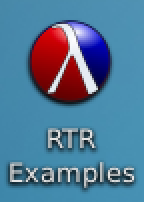
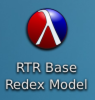
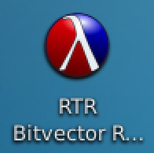
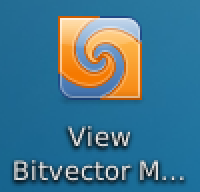
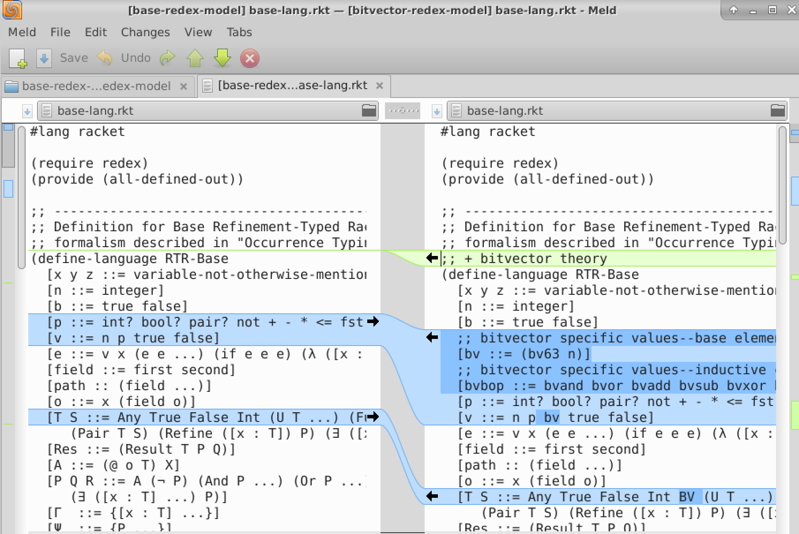
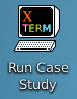
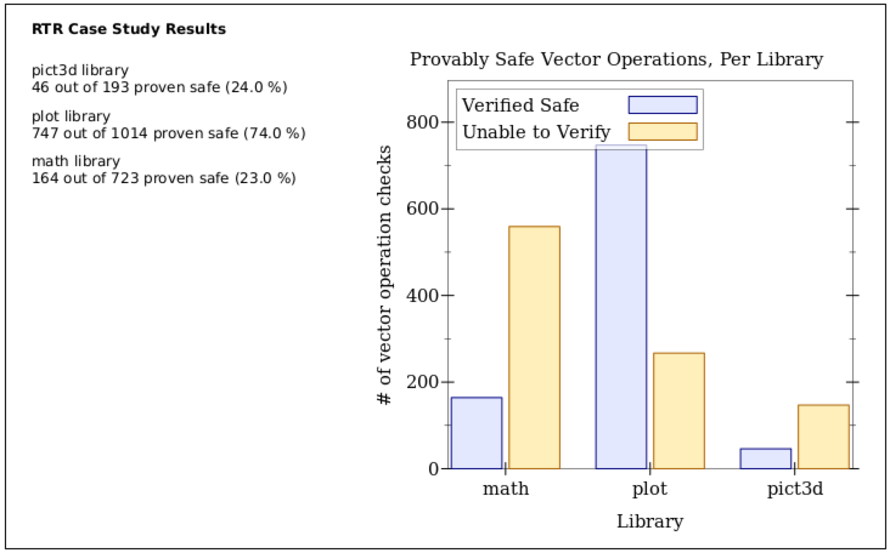
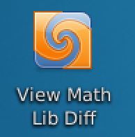
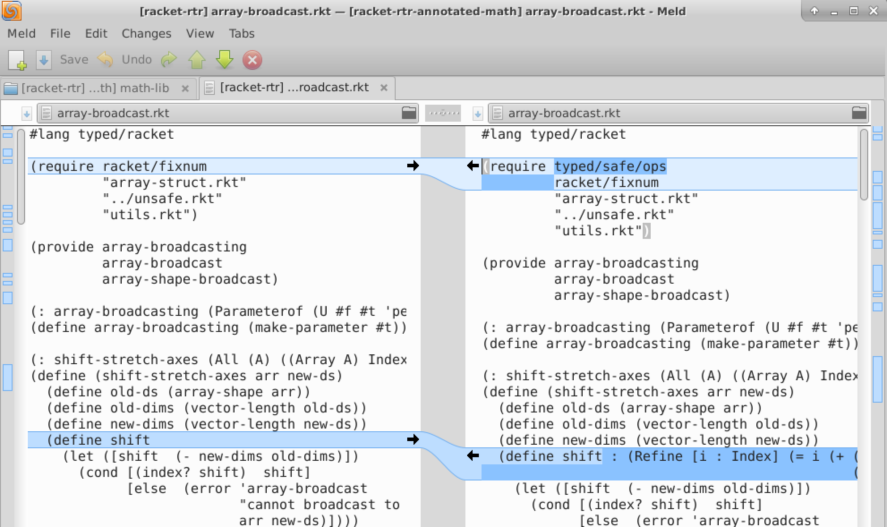
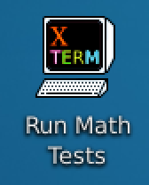

Artifact: Occurrence Typing Modulo Theories
This is the README for the artifact accompanying the conditionally accepted paper "Occurrence Typing Modulo Theories" (PLDI 2016).
VirtualBox Virtual Machine Details
The artifact can be downloaded in a .zip at this URL:
TODO
The archive contains a .vmdk and .ovf file.
To run the artifact image, open the given .ovf file using the File->Import Appliance menu item in VirtualBox. This will create a new VM that can be launched after import.
The username is dave and the password is artifact.
Overview
This artifact is composed of three key components:
We have implemented Refined Typed Racket (RTR) with the theory of linear arithmetic atop Racket v6.2.1, allowing us to typecheck all the examples from the paper.
Our PLT Redex model of the λRTR formalism from the paper and a Redex model illustrating how bitvector theory is added (as discussed in sections 2.2 and 3.4) shows our approach is indeed agnostic of theory details and easily extended.
Our case study examining vector accesses in three large Typed Racket libraries is reproducable. We include a script which generates the initial data for each of the libraries as well as our detailed analysis of the math library which allowed us to show almost 70% of vector accesses can be made provably safe with additional annotations and some relatively minor modifications.
The desktop of the virtual machine contains icons which will launch all of the key components of the artifact.
1 RTR Implementation
Our extension of Typed Racket v6.2.1 to implement RTR with the theory of linear arithmetic is installed at the following location:
/home/dave/racket-rtr

RTR Examples will launch a version of DrRacket using the RTR back end and open all of the examples found in the paper.
2 λRTR PLT Redex Models
PLT Redex is a domain specific language for specifying and debugging formal systems. More information can be found here: https://redex.racket-lang.org/
The PLT Redex models for the λ RTR formalism described in our paper and its extension with bitvector theory (described in sections 2.2 and 3.4) are found here:
/home/dave/pldi16-artifact-misc/base-redex-model
/home/dave/pldi16-artifact-misc/bitvector-redex-model
These are meant to be almost identical to the formal λ RTR described in our paper. Some small modifications, like imposing an ordering on the logical proves relation or using helper functions to keep things in normal forms, are necessary if typechecking is to occur in a reasonable amount of time.
2.1 Base λRTR Model

RTR Base Redex Model will launch DrRacket v6.4 and open the primary files for the λ RTR base redex model:
base-lang.rkt contains the redex language definition for λRTR
subtype.rkt contains the subtype and logical proves relations which are described in the paper in figures 4 and 5. The file also contains a number of tests which execute when the "Run" button at the top right of DrRacket is pressed.
well-typed.rkt contains the typing judgment for λRTR that is found in figure 3 of the paper. This file also contains a number of tests which can be executed using DrRacket’s "Run" button.
DrRacket 6.4 is used to run our PLT Redex models and a few scripts, it will not run examples from the paper using refinement types, etc.
2.2 λRTR+Bitvector Theory Model

RTR Bitvector Redex Model will launch DrRacket v6.4 and open the primary files for the λ RTR+bitvector theory model. These files are almost identical to those listed for the base RTR, except they contain the additional forms required for bitvector theory, as described in section 3.4 of the paper.

View Bitvector Model Diff will open the Meld diff viewing program and make it easy to see the small number of additions required to add bitvector theory to λRTR.

3 Case Study
Our case study involved two phases:
We used RTR with the theory of linear arithmetic to typecheck the math, plot, and pict3d libraries while checking if vector operations are verifiable without any additional annotations.
We performed a detailed analysis on the math library results, assessing why various vector operations were not verifiable and investigating what reasonable changes could be made to make more operations provable safe.
3.1 Case Study Part 1: Generating the Initial Data

The first step for our case study can be replicated with the Run Case Study launcher. This runs our typechecker on the unannotated math, plot, and pict3d libraries.
The raw data from this case study is written to files this desktop folder:
/home/dave/Desktop/case-study-output
A summary png is also generated in that location:

The examined libraries can all be found in the following directory:
/home/dave/racket-rtr/extra-pkgs
3.2 Case Study Part 2: Math Libary Modifications
The second half of our case study focused on examining the output for the math library and seeing what annotations and minor modifications could be made to make more vector operations provably safe.
The modified version of the math library is found in here:
/home/dave/racket-rtr-annotated-math/extra-pkgs/math

View Math Lib Diff launches Meld to display the diff between the original math library and the version after we made our changes:

Run Math Tests will run the math library tests, showing our changes did not break or change the library’s behavior.

During this effort, we performed a detailed examination of all of the raw vector data generated in the first half of the case study. As we made modifications and converted more vector operations to their safe counterparts, we recorded our updates and analysis in the following spreadsheet:
/home/dave/Desktop/math-analysis.pdf
We found 72.7% of all unique vector operations in the math library could be made provably safe with modest effort using our system.
4 Miscellaneous
All of the desktop launchers in the VM simply point to scripts contained here:
/home/dave/pldi16-artifact-misc/scripts
the scripts they use are the following:
open-drracket-base-redex.sh
open-drracket-bitvector-redex.sh
open-drracket-rtr-examples.sh
view-math-libary-diff.sh
view-redex-bitvector-diff.sh
run-case-study.sh
run-math-tests.sh
These next scripts add the various Racket installs’ racket/bin to the current terminals path if sourced:
add-racket-6.4-to-path.sh
add-racket-rtr-annotated-math-to-path.sh
add-racket-rtr-to-path.sh
For example, running source /home/dave/pldi16-artifact-misc/add-racket-rtr-to-path.sh in a terminal would add the RTR installation (the one without the modifications to the math lib) to the current terminal’s PATH.
These scripts, this readme, and more can be found at the following Github repo:
https://github.com/andmkent/pldi16-artifact-misc
The Github repos for the three libraries we examined in our case study can be found here:
https://github.com/dkempe/math (the master branch is the one we annotated and modified, the vanilla branch is the version we originally examined)
https://github.com/andmkent/plot/tree/rtr-prototype
https://github.com/andmkent/pict3d/tree/rtr-prototype